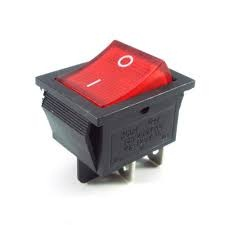
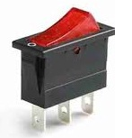
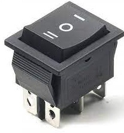
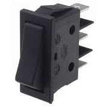
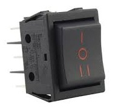

Rocker Switch
A rocker switch definition is; an ON/OFF switch that trips once pressed on one side which means one side of the switch is raised while another side is depressed. There are two symbols on this switch where a circle symbol indicates OFF & the side is a line or horizontal dash which indicates ON. Sometimes, these types of switches are known as see-saw switches. These switches are mainly used in display monitors, surge protectors, power supplies for computers, and many more.
Rocker Switch Types
Rocker switches are available in different styles and formats like On-on, On-off, round rocker,
power rocker, push button, momentary, E-switch, changeover, center-off switch, illuminated
rocker, high inrush rocker, On-NONE-On or On-NONE-Off and many more which are used in different
applications based on the requirement.
Some of them are discussed below.
- On-Off/Off On: These switches allow the operator to choose the on &off positions to provide power supply to a minimum of one or above circuits simultaneously. Typically, on-off rocker switches will include two positions. You can also purchase an on-on type switch based on requirements. 
- Illuminated: Many rocker switches include illumination to illustrate whether power is being transmitted to a circuit or not within a specified location. These types of rocker switches are frequently used in surge protectors, power strips, dashboard displays, control arrays, instrument panels, some appliance breakers & wall-mounted light switches. 
- Momentary: These switches are known as non-latching or push switches. These switches are designed as either normally on otherwise normally off when the switch is in its default position. This switch is engaged only when pressed & comes back to its default position when not being pushed. Momentary rocker switches are extensively used on different types of intermittent input devices like keypad controls, and electric door & window mechanisms. 
- Changeover: A changeover rocker switch is also called a transfer switch which is normally used to divert voltage from one type of circuit to other circuits. These switches are most frequently used in mains grid functions and power supply which allows the user to choose between one input source. These switches are operated manually or automated. Some kinds of changeover switches work like two simultaneous CBs or circuit breakers. 
- Center-off: Generally, every type of rocker switch includes a central OFF position. But this switch has two ON positions usually at any side of the see-sawing mechanism. These may be called on-off-on switches. This kind of rocker switch is a momentary switch, even though in most cases these switches are designed for completely manual operation within all positions. 